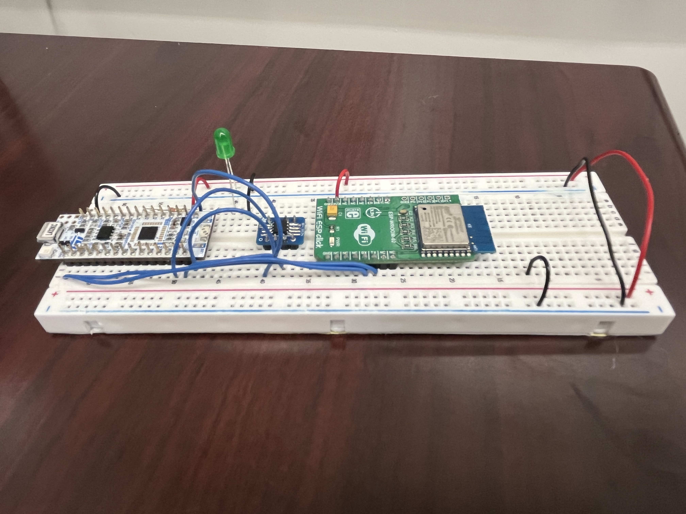

Lab 6: SPI and the Internet of Things
Joaquin Gonzalez-Salgado | jgonzalezsalgado@hmc.edu | June 18, 2026
Introduction
In this lab, an internet-accessible IoT device was built around the STM32L432KC MCU, a DS1722 digital temperature sensor, and an ESP8266 WiFi module. The MCU communicates with the DS1722 over a custom SPI driver written directly against the CMSIS device templates (no third-party drivers), and with the ESP8266 over UART to host a webpage. The page lets a user view the current ambient temperature, toggle an external LED, and — for the excellence requirement — select the DS1722’s conversion resolution (8 through 12 bits) directly from the browser.
Design and Testing Methodology
DS1722 SPI Driver
The DS1722 is controlled over a 3-wire-plus-CE SPI interface (SDI/SDO/SCLK/CE) wired to SPI1 on PB3(SCK)/PB4(MISO)/PB5(MOSI), with chip enable on PA11 driven as a plain GPIO output. Unlike most SPI peripherals, the DS1722’s CE line is active HIGH: the MCU drives CE high to begin a transaction and low to end it, so ds1722_write_reg() and ds1722_read_temp() both bracket their spiSendReceive() calls with digitalWrite(SPI_CE, PIO_HIGH) / PIO_LOW rather than the more typical active-low chip-select pattern.
Each DS1722 register access begins with a one-byte address phase. Bit 7 of that address byte selects read (0) or write (1); ds1722_configure() writes the configuration register (address 0x00) with the desired RES[2:0] resolution bits and leaves the part in continuous-conversion mode (1SHOT = 0, SHUTD = 0). Temperature is read with a single burst transaction: the address byte selects the LSB register (0x01), and two dummy bytes are then clocked out while the DS1722 auto-increments to also return the MSB register (0x02) — keeping both bytes from the same conversion consistent, which a separate two-transaction read could not guarantee.
The temperature itself is reported as a signed two’s-complement integer part in the MSB register and four fractional bits (weights \(2^{-1}\ldots2^{-4}\), always positive) in the upper nibble of the LSB register. ds1722_read_temp() reconstructs the float as (int8_t)msb + frac, which correctly handles negative readings — e.g. \(-10.5\,°C\) is encoded as msb = 0xF5 (\(-11\)) and lsb = 0x80 (+0.5), giving \(-11 + 0.5 = -10.5\).
ESP8266 UART Protocol and Web Server
The ESP8266 is connected over USART1 at 125,000 baud (PA9→ESP RX, PA10←ESP TX, crossed as required). USART1 was used instead of USART2 because USART2_RX lives on PA15, which is reserved internally for the Nucleo’s ST-LINK virtual COM port and is not broken out on the Arduino header.
The main loop blocks on uart_read_byte() (a polling read of USART1->RDR once RXNE is set) waiting for the ESP8266’s request framing, /REQ:<path>\n. It first scans for a literal /, then verifies the next four bytes spell REQ: exactly — anything else is treated as noise and discarded, and the loop resumes scanning for the next /. Once a valid frame header is found, the request path is read byte-by-byte into req_buf until a line terminator.
parse_request() then does simple substring matching (strstr) against the path: ledon/ledoff directly toggle PA5, while res8 through res12 reconfigure the DS1722’s resolution via ds1722_configure() and block for that resolution’s worst-case conversion time before the next read — this matters because the new resolution’s first conversion is not ready until a full conversion period has elapsed. Longer resolution strings (res12, res11, …) are checked before shorter ones (res1) to avoid a substring of res12 falsely matching a res1 branch.
Webpage Generation
send_webpage() streams the response HTML to the ESP8266 over UART in pieces via sendString(), starting with <!DOCTYPE html> and ending with </html> as required by the ESP8266’s HTTP server firmware. The page reports the live temperature, the currently configured resolution with links to switch to any of the five supported resolutions (the excellence feature), and the LED’s current state with ledon/ledoff links.
Because the linker is not configured with -u _printf_float, sprintf("%f", ...) cannot be used to format the temperature. Instead, temp_to_str() manually splits the float into a sign, integer part, and a rounded two-digit fractional part (computed as (int)((abs_t - i_part) * 100 + 0.5) with carry-out handling when rounding reaches .99 → 1.00), then formats it with plain integer %d conversions.
Calculations
SPI clock: The system clock is raised to 80 MHz via the PLL, and SPI1 hangs off APB2. With baud-rate prescaler field BR = 4, the SPI clock divider is \(2^{BR+1}\):
\[ f_{\text{SCLK}} = \frac{f_{\text{APB2}}}{2^{BR+1}} = \frac{80\,\text{MHz}}{2^{5}} = \frac{80\,\text{MHz}}{32} = 2.5\,\text{MHz} \]
This is comfortably under the DS1722’s 3 MHz maximum SPI clock rating.
UART bit/byte timing: At 125,000 baud, each bit period is:
\[ T_{\text{bit}} = \frac{1}{125{,}000} = 8\,\mu\text{s} \]
With one start bit, eight data bits, and one stop bit per UART frame, each byte takes:
\[ T_{\text{byte}} = 10 \times T_{\text{bit}} = 80\,\mu\text{s} \]
Conversion time vs. resolution: The DS1722’s conversion time roughly doubles with each additional resolution bit. The firmware blocks for a conservative, datasheet-derived delay after switching resolution before its next read — e.g. the 12-bit delay of 1500 ms comfortably covers the part’s actual ~1440 ms worst-case 12-bit conversion time, and the 10-bit delay of 400 ms covers the ~360 ms worst-case 10-bit conversion time, with the 8/9/11-bit delays (100/200/750 ms) scaled the same way.
Technical Documentation
The source code for the project can be found in the associated GitHub Repo.
Hardware Setup
Lab 6 Hardware Setup // Joaquin Gonzalez-Salgado // June 17 2026

Figure 1 shows the assembled hardware: the NUCLEO-L432KC (left) connects to the DS1722 breakout (center-left) over SPI1, to the ESP8266 WiFi click module (center-right) over USART1, and drives an external green LED through a 330 Ω series resistor, with all grounds tied to the breadboard’s common rail.
TBD: A formal labeled schematic (per the excellence-level schematic requirements — standard symbols, signals flowing left-to-right, title block) has not yet been added and will replace/supplement Figure 1.
Logic Analyzer Capture
TBD (Excellence): A logic analyzer capture of a
DS1722SPI transaction showingCE,SCK,SDI, andSDOtogether has not yet been added to the report.
Results and Discussion
The design was a success!
The design met all proficiency-level requirements: the custom SPI driver (built directly on CMSIS register access, no vendor HAL) correctly reads ambient temperature in the lab’s -10 °C to 30 °C range, the webpage refreshes to show an updated reading on every load, and LED state is both displayed and controllable from the page.
For the excellence level, the resolution selector is fully implemented — selecting any of the 8–12-bit options on the webpage reconfigures the DS1722 and waits out that resolution’s conversion time before the next temperature read is taken, so a stale or in-progress conversion is never reported. The remaining excellence item is the logic analyzer capture of a live SPI transaction, which is still TBD.
Conclusion
This lab combined a from-scratch SPI driver for the DS1722 temperature sensor with a UART-based request/response protocol to the ESP8266, producing a webpage that reads live temperature and controls an LED over WiFi. The active-high CE quirk of the DS1722 and the printf-without-floats constraint on the webpage formatting were the two main departures from a “textbook” SPI/UART implementation. The remaining open item is capturing a logic analyzer trace of the SPI bus for the excellence requirement.
This lab took ___ hours.
AI Prototype Summary
The purpose of the AI Prototype is to experiment with utilizing AI as a coding assistant, and analyze the quality, speed, and precision that an LLM can generate code. The prompt for this week is shown below:
Prompt: I’m writing a bare-metal SPI driver for a DS1722 temperature sensor on the STM32L432KC using CMSIS, no HAL. The DS1722’s chip-enable line is active HIGH instead of the usual active-low chip select. How should that change my SPI transaction code compared to a normal active-low peripheral?
// Active-HIGH CE: assert CE HIGH to start, LOW to end — opposite of // a normal active-low SPI chip select.
#define DS1722_WRITE_BIT 0x80
void ds1722_write_reg(uint8_t reg, uint8_t data) { digitalWrite(SPI_CE, PIO_HIGH); // assert (opposite of CS-low parts) spiSendReceive(reg | DS1722_WRITE_BIT); spiSendReceive(data); digitalWrite(SPI_CE, PIO_LOW); // deassert }
uint16_t ds1722_read_temp_raw(void) { digitalWrite(SPI_CE, PIO_HIGH); spiSendReceive(0x01); // LSB register address, read uint8_t lsb = spiSendReceive(0x00); uint8_t msb = spiSendReceive(0x00); // auto-increments to MSB reg digitalWrite(SPI_CE, PIO_LOW); return (msb << 8) | lsb; }
Reflection:
This week is Claude Sonnet again. Its core advice was correct and matched what ended up in the final driver: since CE is active-high, every transaction simply swaps which level means “asserted,” so the GPIO write at the start of a transaction becomes PIO_HIGH instead of PIO_LOW, and the one at the end becomes PIO_LOW instead of PIO_HIGH — everything else about clocking bytes out over spiSendReceive() stays the same. It also correctly suggested reading the LSB and MSB registers back-to-back in one CE-asserted burst to take advantage of the DS1722’s register auto-increment, rather than doing two separate transactions, which is exactly the approach used in ds1722_read_temp().
Where it fell short was the temperature decode itself: it returned the raw register pair as a plain uint16_t and left interpreting the sign and fractional bits as an exercise, without mentioning that the MSB is signed two’s-complement or that the LSB’s upper nibble holds fractional weights of \(2^{-1}\ldots2^{-4}\). That part — and the negative-temperature edge case (\(-10.5\,°C \to\) msb=0xF5, lsb=0x80) — had to be worked out by hand from the datasheet.